Ch1. Introduction
数据库的基本概念
数据库
长期存储在计算机内、有组织的、大量的、共享的数据集合。
数据库管理系统
位于用户与操作系统之间的一层数据管理软件，为用户或应用程序提供访问数据库的方法和接口。
数据模型
- 数据模型用于描述实现世界中的用户数据及其复杂关系最终在数据库中的表示，主要包括：数据库中数据的数据结构、在该数据结构上可以执行的操作、以及必须满足的数据约束条件等三个组成部分。
- It also describes integrity constraints and the types of operations available to access and update this information.
- 分类：
- Hierarchical Data Model (层次数据模型)
- Network Data Model (网状数据模型)
- Relational Model (关系模型)，属于Object-Relational Model
- Object-Oriented Model (面向对象模型)，属于Object-Relational Model
数据库用户，数据库管理员
- 最终用户：交互式用户
- 应用程序员：编写菜单程序的程序员
- 数据库管理员：管理DBMS的专家
数据库系统的体系架构
- 两层架构(Two-tier Architecture)：在两层C/S架构中，数据库和DBMS运行在数据库服务器中，数据库应用程序运行在客户机中，两者之间通过局域网实现数据访问
- 三层架构(Three-tier Architecture)：在三层B/S架构中，数据库和DBMS运行在数据库服务器中，数据库应用程序运行在应用服务器（也称“Web服务器”）中，用户客户端只需要安装常用的浏览器，负责接收用户输入和结果展示。
数据库系统的发展历史
- 关系数据库：关系数据模型，三级模式
★ Ch2. The Relational Model
关系模型的基本概念
数据结构
表(table/relation)，属性(column/attribute)，元组(row/tuple)，表头(table heading)/关系模式(relational schema)，域(domain)
关系的约束规则(relational rule)
- Rule 1. First Normal Form Rule: columns that have multi-valued attributes (repeating fields) or have any internal structure (record) are not permitted.
- Rule 2. Access Rows by Content Only Rule: can only retrieve rows by their content, the attribute values that exist in each row.
- Rule 3. The Unique Row Rule:
- Two rows can’t be same in all attributes at once.
- So that a relation is an unordered SET of tuples.
键/关键字(key) 与超键(superkey)
- Superkey: is a set of columns that has the uniqueness property
- key: is a minimal key, no subset of columns also has uniqueness property
空值(null value)
A null value is placed in a field of a table when a specific value is either unknown or inappropriate.
关系代数(relational algebra)
基本运算：并，差，投影，选择，迪卡尔乘积
扩充运算：交，自然联接/ θ-联接，除法
Set-theoretic operations
并，交，差，笛卡尔积
Native relational operations:
投影，选择，联接，除法
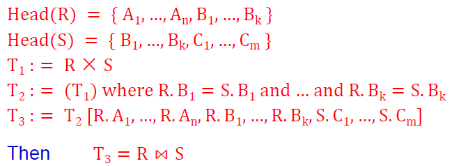
除运算的推导公式：
Other Relational Operations
Theta Join
难点
- 查询条件带有‘否定’语义：‘不等’比较 & 减法运算
- 使用表联接查询，还是使用除法?
- 正确使用自然连接运算和除法运算
- 表的自联接
★ Ch3. Basic SQL Query Language
数据访问命令的基本结构
SELECT 命令的语句成分
1 | SELECT ... |
基本的数据查询命令
单表查询
1 | SELECT A1, A2, ..., Am |
在FROM子句中，对表的重命名
1 | SELECT distinct cname, aname |
多表查询
联接（join）查询
1 | SELECT A1, A2, ..., Am |
1 | SELECT Col1, Col2, ..., Colr |
1 | SELECT A1, A2, ..., Ak |
表自身的连接查询
1 | SELECT c1.cid, c2.cid |
扩展的查询谓词
between … and …
1 | expr [NOT] BETWEEN expr1 AND expr2 |
1 | SELECT * |
is null, in not null
1 | column IS [NOT] NULL |
1 | SELECT * |
like
1 | column [NOT] LIKE val1 [ ESCAPE val2 ] |
1 | Select cid |
in, not in
1 | expr IN ( subquery ) |
1 | select distinct cid from orders |
some, any, all
1 | expr theta SOME ( subquery ) |
1 | SELECT aid |
exists, not exists
1 | EXISTS ( subquery ) |
1 | Select distinct c.cname |
查询结果输出
结果元组去重：distinct
1 | SELECT distinct pid FROM orders ; |
子查询的集合运算
UNION / INTERSECT / EXCEPT
1 | Subquery UNION Subquery |
UNION ALL / INTERSECT ALL / EXCEPT ALL
1 | Subquery UNION ALL Subquery |
复杂的数据查询指令
统计查询
1 | select sum ( qty ) as TOTAL |
1 | select count ( cid ) |
1 | select cid |
关系代数中除法运算功能在SQL中的表示方法
1 | SELECT c.cid |
在FROM字句中嵌入子查询
1 | select cname |
1 | SELECT cname, aname |
元组更新命令
元组的插入、修改、删除功能
1 | INSERT |
1 | INSERT INTO orders(ordno,month,cid,aid,pid) |
1 | create table swcusts ( |
1 | UPDATE tablename |
1 | UPDATE agents |
1 | DELETE |
1 | DELETE |
Ch7. Integrity, Views, Security, and Catalogs
基表定义命令
Create Table Statement
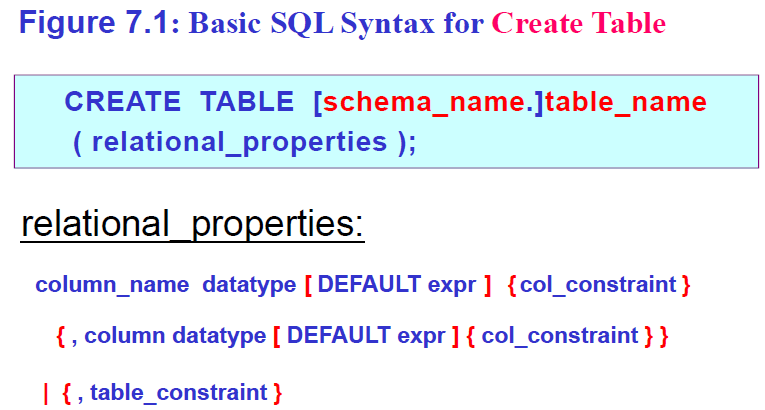
Integrity
Integrity Constraints in a single column
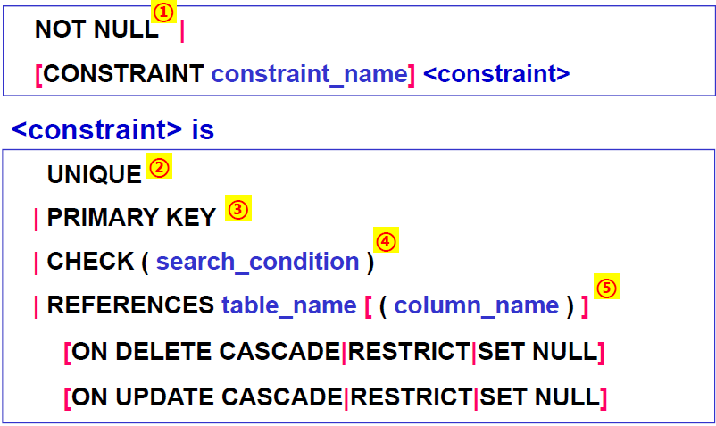
NOT NULL：属性不能取空值。
UNIQUE：该属性的取值在表中具有唯一性。
PRIMARY KEY：主关键字约束的定义（由单个属性构成的主关键字的定义）；自动隐含着属性值‘非空’的约束要求。如果定义只能定义一个主关键字。
CHECK约束：可以通过一个逻辑表达式来定义该属性的取值约束
REFERENCES：
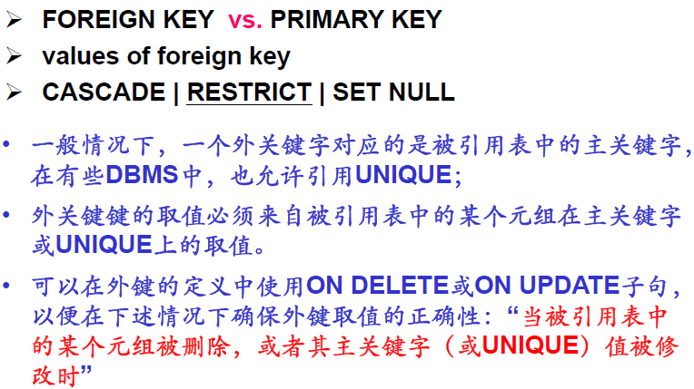
Integrity Constraints in multiple columns (table constraints)
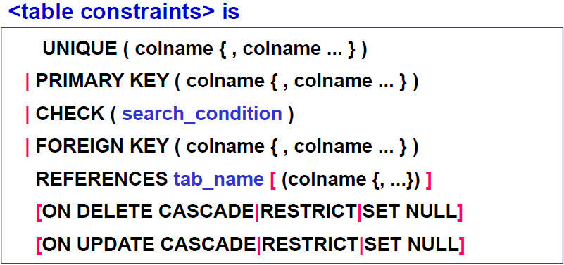
1 | create table orders( |
1 | create table orders ( |
Referential Integrity: Foreign Key
表T1的每一行中F（外键）的列都满足
- 至少有一列为空值（如果该列允许为空）
- 如果不包含空值，就必须与表T2 中某行的相应P的组合值相等
1 | CREATE TABLE Emp ( |
- RESTRICT：如果某部门中有职工，那么将不允许在Dept表中删除该部门元组，从而保证了Emp表中外键dno的引用完整性。
- CASCADE：如果某部门中有职工，那么在Dept表中删除该部门元组的同时，将从Emp表中删除该部门的所有职工。
- SET NULL：如果某部门中有职工，那么在Dept表中删除该部门元组的同时，在Emp表中将该部门所有职工的dno置为NULL.
触发器 (trigger)：定义与分类
定义：A database trigger is procedural code that is automatically executed in response to certain events on a particular table or view in a database.
分类：
- For Each Row Type
- This trigger gets executed once for each row of the result set affected by an insert/update/delete.（对每个受影响的行执行一次）
- before / after
- For Each Statement Type
- This trigger gets executed only once for the entire result set, but fires each time the statement is executed.（在语句结束时执行一次）
- before / after
视图(view)定义命令
视图的概念、特点与作用
Definition
- It is a table that results from a subquery, but which has its own name (table name & attributes name)
- It can be used in most ways as a Base Table created by SQL CREATE TABLE statement
Property
- no data storage in its own right, just window on data it selects from
- so, it is regarded as a Virtual Table
Weakness
- limits to View Updates
作用：
- 视图提供了一种方法，使复杂的、经常用到的查询写起来更容易。
- 视图允许过时的表和引用过时表的程序不被重新组织。
- 使程序对数据的访问独立于其物理结构的改变 (数据独立性)
- 视图加入了一种安全措施，让不同的用户以不同的方式看相同的数据。
视图的创建命令
1 | CREATE VIEW view_name [(col_name {, …...})] |
可更新视图的判定方法
A view table is said to be updatable when the following conditions hold for its Subquery clause.
- The FROM clause of the Subquery must contain only a single table, and if that table is a view table it must also be an updatable view table.
- Neither the GROUP BY nor HAVING clause is present.
- The DISTINCT keyword is not specified.
- The WHERE clause does not contain a Subquery that references any table in the FROM clause, directly or indirectly via views.
- All result columns of the Subquery are simple column names: no expressions, no column name appears more than once.
安全性
授权语句(GRANT…TO…) 和权限回收语句(REVOKE…FROM…)
1 | GRANT {ALL PRIVILEGES|privilege {, privilege … }} |
privileges
- SELECT, DELETE, INSERT
- UPDATE [ col_name {, col_name …} ]
- REFERENCES [ col_name {, col_name …} ]
1 | REVOKE { ALL PRIVILEGES | privilege {, privilege …} } |
Ch5. Programs to Access Database
数据库访问
SQL语言的不同使用方式：嵌入式SQL (ESQL)，交互式SQL (ISQL)
- Embedded SQL (ESQL): SQL statements embedded in host language (e.g. COBOL, C/C++, Java, …)
- for Application Programmers to develop menu applications
- for end-users to access a database through menu applications
- Interactive SQL (ISQL):
- for Casual Users to access a database
在嵌入式SQL中，应用程序获取查询结果元组的两种方式：select……into…… 和使用‘游标’，它们之间有什么区别？
- select…into…只适用于返回单条结果元组的查询
- 游标能够处理多行
在数据库访问中，最常见的访问异常是sqlerror和not found，它们有什么区别？
- SQLERROR
- arise from a programming error
- it can terminates execution of the program
- NOT FOUND
- No rows are affected following some SQL statement such as Select, Fetch, Insert, Update, or Delete.
- It often be used to end loop, or change the flow of control.
在应用程序与数据库管理系统的交互过程中，是如何处理‘空值’问题的？
- 使用指示器变量 (Indicator Variables)
游标(Cursor)
游标的用处
一次一行原则：在嵌入式SQL程序中，每当检索未知数量的行时，程序员应该假设这些记录不能一次全部放入任一声明过的数组中，并且程序的设计也应该反映出这一假设。
如何处理未知个数的行这一问题让我们想到了从文件中处理未知个数的输入值的方法，我们通常是通过一个循环每次处理一个值。由于程序是以顺序的、每次一步的方式执行的，很显然，从一条Select语句中我们总是每次查看一行。当我们在未知个数的行上执行Select语旬时，每次从记录集中检索一行，需要一个游标记录当前位置。
与游标有关的四条语句
declare a cursor
define a cursor with an ESQL select statement which may return multiple rows
1
2
3
4
5EXEC SQL DECLARE agent_dollars CURSOR FOR
select aid, sum(dollars)
from orders
where cid = :cust_id
group by aid ;open the cursor
execute the select statement and open the result set
1
EXEC SQL OPEN agent_dollars ;
fetch the result rows
loop to fetch rows
fetch one row at a time
1
2
3
4
5while (TRUE) { /* loop to fetch rows */
exec sql fetch agent_dollars
into :agent_id, :dollar_sum;
printf("%s %11.2f\n",agent_id,dollar_sum);
} /* end fetch loop */close the cursor
release the result set
1
EXEC SQL CLOSE agent_dollars ;
事务 (transaction)
什么是关系数据库中的事务？事务的ACID性质是什么？
The Concept of a Transaction
- group several SQL statements together into a single indivisible, all-or-nothing transactional package.
ACID properties:
- 原子性：The set of updates contained in a transaction must succeed or fail as a unit (either they all happen or none happen). This is true even in presence of a crash.
- 一致性：If all the individual processes follow certain rules and use transactions right, then the rules won’t be broken by any set of transactions acting together.
- 隔离性：Means that operations of different transactions seem not to be interleaved in time, as if ALL operations of one transaction before or after all operations of any other transactions.
- 持久性：When the system returns to the logic after a Commit Work statement, it guarantees that all updates of a committed transaction are on disk, the changes it has made to the data will survive any machine or system failures.
事务是如何开始和如何结束的？事务的结束方式有哪几种？它们的区别是什么？
How Transactions Are Specified in Programs
- Start Transaction
- when first access is made to table after connect or prior commit or abort.
- End Transaction
- exec sql commit work;
- Successful commit, rows updated, become concurrently visible.
- exec sql rollback work;
- Unsuccessful abort, row value updates rolled back and become concurrently visible.
- exec sql commit work;
数据库访问中间件
最常用的数据库访问中间件有哪些
见下图
web数据库应用的数据交换流程是什么
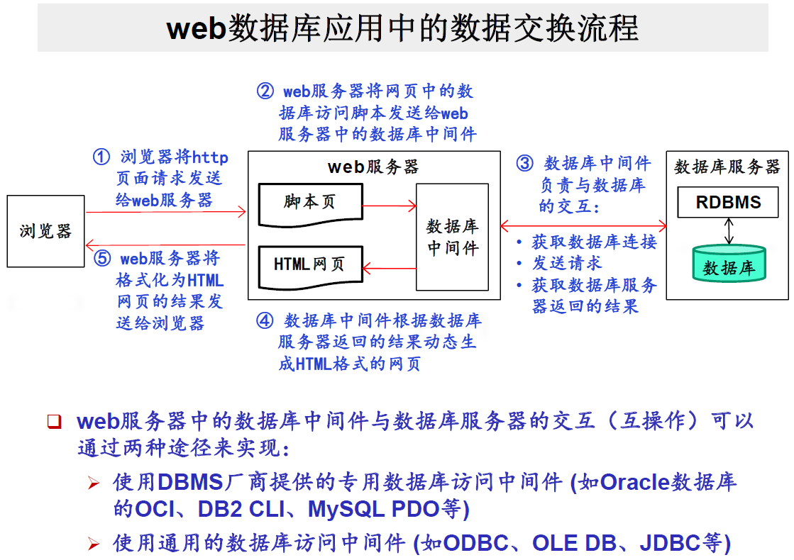
★ Ch6. Database Design
概念设计
EER模型
基本概念：实体(entity)，属性(attribute)，联系(relationship)
- 用长方形、椭圆形、菱形来表示，概念用无向线段相连
- ER模型中的identifier和primary identifier的作用相当于关系模型或SQL语言中的key和primary key.
- identifier在ER图中通过加下划线的方式来表示
- composite attribute的表示方法：在composite attribute和其各个成员属性之间用‘无向线段’直接相连。
- multi-valued attribute 的表示方法（二选一）：
- 在 multi-valued attribute 和 实体集之间用双线段连接；
- 可在 Cardinality of Attributes（属性基数）中描述取值特征（单值 or 集合值）。
- Transforming Entities and Attributes to Relations
- An entity is mapped to a single table.
- A multi-valued attribute must be mapped to its own table.
- 因‘联系’而产生的信息，可以抽象为‘联系’上的属性，并用无向线段连接到对应的联系上。
- 为了描述一个实体在一个联系中所担当的‘角色’(role)，可以在它们之间的连线上添加适当的有意义的‘文字标注’。
Cardinality of Entity Participation in a Relationship
- 实体E在联系R中的参与基数：Card(E, R) =
single-valued & multi-valued participation, mandatory & optional participation
- single-valued & multi-valued participation
- single-valued participation (单值参与): max_card(E, R) = 1
- multi-valued participation (多值参与): max_card(E, R) = N
- mandatory & optional participation
- mandatory participation (强制参与): min_card(E, R) = 1
- optional participation (可选参与): min_card(E, R) = 0
One-to-One, Many-to-Many, and Many-to-One Relationship：根据实体在联系中的最大参与基数max_card对联系进行类别划分
- One-to-One: Card(E, R) = <0, **1**>, Card(F, R) = <0, **1**>
- Many-to-One: Card(E, R) = <0, **n**>, Card(F, R) = <1, **1**>
- Many-to-Many: Card(E, R) = <1, **n**>, Card(F, R) = <0, **n**>
Transforming Binary Relationships to Relations
N-N Relationships：
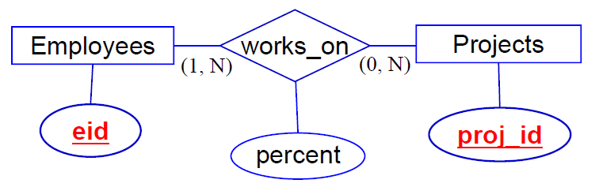
works_on(eid, proj_id, percent)
N-1 Relationships
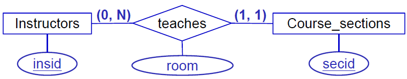
Instructors(insid, lname, office_no, ext)
Course_sections(secid, course, period, insid, room)
N-ary relationships的转换
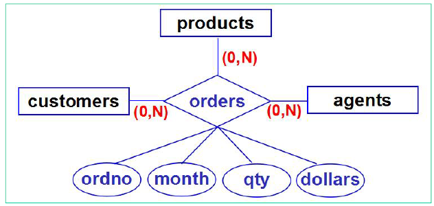
orders(cid, pid, aid, ordno, month, qty, dollars)
recursive relationship的转换

Employees (eid, ename, ……, mgr_id)
Cardinality of Attributes, Weak Entity, Generalization Hierarchies
Cardinality of Attributes (属性基数)
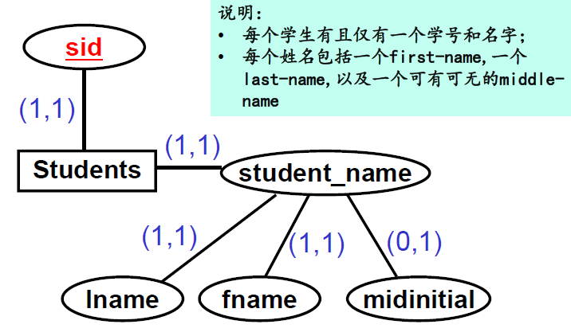
Weak Entities (弱实体)：如果实体的所有实例都通过一个联系R依赖于另一个实体的实例而存在，那么这个实体就称为弱实体，而另一个实体称为强实体。
Generalization Hierarchies (泛化层次)：多个有公共属性的实体可以泛化为一个更高层次的超类型实体。
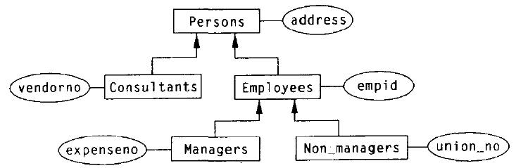
规范化
规范化的目的与手段
- 在一个关系中，属性与属性之间需要满足一定的约束条件，这样的约束条件，我们称之为‘范式’ (Normal From)
- 不同的约束条件，就构成了不同级别的范式定义
- 规范化设计的目标，是希望最终设计得到的每一个关系都能满足到特定范式（通常是3NF）的要求，从而避免出现过高的数据冗余存储和操作异常现象。
函数依赖
函数依赖的定义：
- A and B are two sets of attributes in the same relation T. A → B if and only if For any rows r1 and r2 in any instance of relation T, if r1[A] = r2[A] then r1[B] = r2[B]. 读作“A函数决定B”.
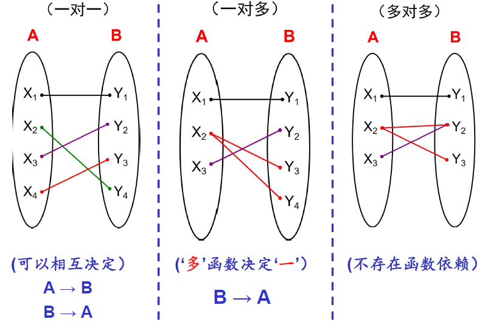
（注意一对多和多对一的区别）
Armstrong’s Axioms：3条公理 + 若干定理
- Inclusion Rule: If $Y \subseteq X$, then $X \rightarrow Y$.
- Transitivity Rule: If $X \rightarrow Y$ and $Y \rightarrow Z$, then $X \rightarrow Z$.
- Augmentation rule: If $X \rightarrow Y$, then $XZ \rightarrow YZ$.
基于函数依赖的关键字：
Given a table $T$ with a set of FDs $F$ and a set of attributes $X$ in $\text{Head}(T)$, $X$ is a key of $T$ iff $X$ full functionally determines all attributes in $T$. 即 $X \stackrel{f}{\rightarrow} \text{Head}(T) \in F^+$.
关键字的发现算法：
输入：关系 $T$ 的属性集合 $U$, 函数依赖集最小覆盖 $F$, 属性子集和划分 $U_L, U_R, U_A$.
输出：关键字 $K$.
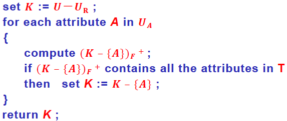
PRIME ATTRIBUTE (主属性)
- In a table $T$, an attribute $A$ is said to be prime if and only if the attribute $A$ exists in some key $K$ for the table.
- A prime attribute of a table T is any attribute that is part of a key for that table, not necessarily a primary key.
NON-PRIME ATTRIBUTE (非主属性)
- In a table $T$, an attribute $A$ is said to be non-prime if and only if the attribute $A$ doesn’t exist in any key $K$ for the table.
trivial functional dependency (平凡函数依赖) vs. non-trivial functional dependency (非平凡函数依赖)
- $X \rightarrow Y$ is called trivial if $Y$ is a subset of $X$.
partial functional dependency (部分函数依赖) vs. full functional dependency (完全函数依赖)
- $X\rightarrow Y$ is called partial if we have another FD $W \rightarrow Y$ and $W \subset X$.
Closure of a Set of FDs (函数依赖集 $F$ 的闭包，记为 $F^+$)
- $F^+ = \{X \rightarrow Y | F \models X \rightarrow Y\}$
- 计算过程：
- $F$ 中的每一个函数依赖都是其闭包 $F^+$ 的成员；
- 利用自反规则推导得到的所有平凡函数依赖，也都是闭包 $F^+$；
- 如果函数依赖 $f_1, f_2, \cdots, f_k (k> 1)$ 是闭包 $F^+$ 的成员，且利用Armstrong公理系统能够从 $f_1, f_2, \cdots , f_k$ 推导得到函数依赖 $f$, 则函数依赖 $f$ 也是闭包 $F^+$ 中的成员；
- 重复步骤③，直至 $F^+$ 中不再有新的函数依赖加入。
FD Set Cover (函数依赖集的覆盖)
- $F$ cover $G$ iff $G \subseteq F^+$.
Equivalence of two sets of FDs (函数依赖集的等价)
- $F \equiv G$ iff $F$ cover $G$ and $G$ cover $F$.
Closure of a Set of Attributes (属性集的闭包)
- $X_F^+ = \{A |X \rightarrow A \in F^+\} = \{A | A \text{ is a single attribute and } X \rightarrow A \text{ can be derived from } F\}$
The following statements are equivalent:
Minimal Cover (最小覆盖)
- a minimal set M of FDs that covers a given set F of FDs.
- 计算过程：
- 从函数依赖集 $F$, 我们创建函数依赖一个等价集 $H$, 它的函数依赖的右边只有单个属性。
- 从函数依赖集 $H$, 顺次去掉在 $H$ 中非关键的单个函数依赖。
- 从函数依赖集 $H$, 顺次用左边具有更少属性的函数依赖替换原来的函数依赖，只要不会导致 $H^+$ 改变。（说明：在step 3计算完成后，需要按照step 2的方法重新检查一遍，是否产生新的冗余函数依赖并消除之。）
- 从剩下的函数依赖集中收集所有左边相同的函数依赖，使用联合规则创建一个等价函数依赖集 $M$, 它的所有函数依赖的左边是唯一的。
范式：1NF, 2NF, 3NF, BCNF
各个范式的定义：
BCNF: A table $T$ in a database schema with FD set $F$ is in BCNF iff
for any FD $X \rightarrow A$ in $F^+$ that lies in $T$ (all attributes of $X$ and $A$ in $T$), $A$ is a single attribute that isn’t in $X$, then $X$ must be a superkey for $T$.
3NF: A table $T$ in a database schema with FD set $F$ is in 3NF iff
for any FD $X \rightarrow A$ in $F^+$ that lies in $T$, if $A$ is a single non-prime attribute that isn’t in $X$, then $X$ must be a superkey for $T$.
2NF: A table $T$ in a database schema with FD set $F$ is in 2NF iff
for any FD $X \rightarrow A$ in $F^+$ that lies in $T$, where $A$ is a single non-prime attribute that isn’t in $X$, then $X$ is not properly contained in any key of $T$.
2NF、3NF、BCNF相互之间的关系及证明：BCNF $\Rightarrow$ 3NF $\Rightarrow$ 2NF. 证明由定义易知。
一个关系是否满足某个范式的判断：首先找Keys, Prime Attributes, Non-Prime Attributes.
BCNF
1
2
3
4
5
6
7
8
9
10
11flag = true
for each X→A in F+ {
if (A is a single attribute that isn’t in X) {
if (X isn't a superkey for T) {
flag = false;
break;
}
}
}
if (flag == true) T is in BCNF
else T isn't in BCNF3NF
1
2
3
4
5
6
7
8
9
10
11flag = true
for each X→A in F+ {
if (A is a single non-prime attribute that isn’t in X) {
if (X isn't a superkey for T) {
flag = false;
break;
}
}
}
if (flag == true) T is in BCNF
else T isn't in BCNF
模式分解
decomposition of table T (关系分解)：For any table T with an associated set of functional dependencies F, a decomposition of T into k tables is a set of tables $\{T_1, T_2, \cdots, T_k\}$, with two properties:
- for every table $T_i$ in the set, $\text{Head}(T_i) \subset \text{Head}(T)$
- $\text{Head}(T) = \text{Head}(T_1) \cup \text{Head}(T_2) \cup \cdots \cup \text{Head}(T_k)$
无损联结性(Lossless Decomposition): A decomposition of a table $T$ with an associated set $F$ of FDs is said to be a lossless decomposition if, for any possible future content of $T$, the FDs in $F$ guarantee that the following relationship will hold: (有损分解将 $\equiv$ 替换为 $\sub$)
依赖保持性(FD Preserved)的定义
设关系模式 $R$ 上的函数依赖集为 $F$, 将关系模式 $R$ 分解为 $\{T_1, T_2, \cdots, T_k\}$ 这 $k$ 个子关系模式。Then an FD $X \rightarrow Y$ of $F$ is said to be preserved in the decomposition of $T$, if for some table $T_i$ of the decomposition, $X \cup Y \subseteq \text{Head}(T_i)$.
$F_i = \{X \rightarrow Y | F \models X \rightarrow Y , X \cup Y \subset \text{Head}(T_i)\}$.
如果函数依赖集 $F$ 和 $(F_1 \cup F_2 \cup \cdots \cup F_k)$ 是相互等价的，即 $F^+ = (F_1 \cup F_2 \cup \cdots \cup F_k)^+$, 则称该分解满足依赖保持性。
无损联结性的判定定理
Given a table $T$ with a set $F$ of FDs valid on $T$, then a decomposition of $T$ into two table $\{T_1, T_2\}$ is a lossless decomposition if one of the following functional dependencies is implied by $F$: (1) $\text{Head}(T_1) \cap \text{Head}(T_2) \rightarrow \text{Head}(T_1)$ or (2) $\text{Head}(T_1) \cap \text{Head}(T_2) \rightarrow \text{Head}(T_2)$.
分解算法：到3NF且能够满足无损联结性和依赖保持性的分解算法
1 | Replace F with minimal cover of F |
分解到BCNF（可能不满足依赖保持性）
数据库设计案例
- ER模型设计
- ER模型到关系模型的转换
- 对指定关系的规范化设计
- 函数依赖的发现
- 范式的判断与分解